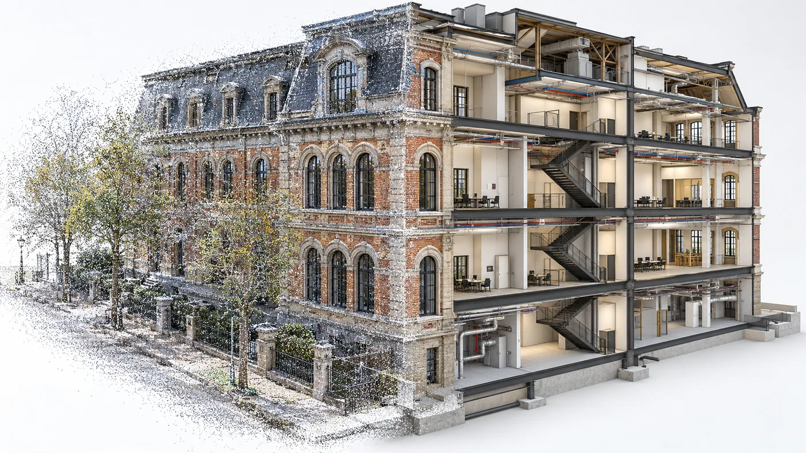

01Scan-to-BIM
Point clouds to structured BIM models
Transform registered point clouds and laser-scan data into detailed 3D BIM models that represent the captured building or facility, based on the agreed modelling requirements.
We work from
- Registered point clouds
- Terrestrial laser-scan data
- Surveyor-provided scan data and references
What you get
- 3D BIM building models
- Modelled architectural elements according to the agreed scope
- Model detail aligned with project requirements
- Revit / RVT
- IFC
- Allplan
- Archicad